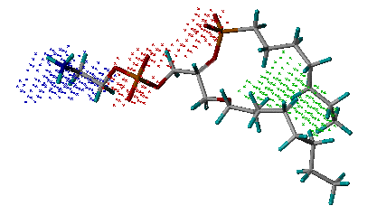
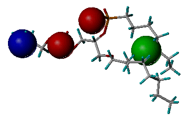

Cavity is a structure-based protein binding site detection program. Identifying the location of ligand binding sites on a protein is of fundamental importance for a range of applications including molecular docking, de novo drug design, structural identification and comparison of functional sites. It uses the purely geometrical method to find potential ligand binding site, then uses geometrical structure and physical chemistry property information to locate ligand binding sites. Cavity will provide a maximal ligand binding affinity prediction for the binding site. The most important, Cavity could define accurate and clear binding site for drug design.
Please notice:
1.LigBuilder V3 adopts the "rigid receptor" assumption.
Therefore, if there are multiple conformations for target protein, you should treat them as different targets..
2. Running Cavity is fast. It takes only a few miniutes for a typical Cavity job running on a mainstream workstation. The running time will increase if the size of
the binding site is larger than average. But a Cavity run will consume a lot of memory, a typical Cavity jobs will use 1~2G memory space.
Synopsis of running Cavity:
cavity Parameter_file
For example:
./cavity cavity.input
The parameter file assembles all the information necessary to run Cavity as you wish. You should edit the parameter file before running Cavity. The key words appeared in this parameter file are explained in the following.
For convenience, we provide some default parameter sets to adapt different task, user may simply loaded them into your parameter file by the keyword "INCLUDE" . They are under the path "LigBuilderV3/default/", including 5 default sets:
Overall default set:
cavitydefault.input: The overall default parameter set of Cavity. Including all default settings of Cavity.
Detection mode set:
standard.input: The parameter set of standard detection, for common binding-site,default.
peptide.input: The parameter set of peptide-like binding-site detection, for shallow cavity, e.g.peptide-protein, protein-protein interface.
large.input: The parameter set of large binding-site detection, for large and complex cavity, e.g. large protein-protein interface, multi-function cavity, multi-substrate cavity, channel, nucleic acid site
super.input: The parameter set of super binding-site detection, for super-sized cavity, e.g. large channel, large polymer interface.
DETECT_MODE: Detect mode of Cavity. 0: Whole protein mode, Cavity will detect the whole protein to find potential binding sites, and this is the default mode. 1: Ligand mode, Cavity will detect around the given Mol2 file. It helps the program do know where the real binding site locates. In most cases, Cavity could locate the binding site without given ligand coordinates, and you may try this mode if you are dissatisfied with the result from whole protein mode. 2: Area mode, Cavity will detect the specific space area assigned by user. User may constrain the binding site by this mode, and LigBuilder V3 will not design molecules occupy the undesired subsite.
RECEPTOR_FILE: The PDB file presenting the target protein. This file is absolutely necessary to run Cavity. We suggest that the 3D structure of the target protein comes from a complex rather than an unbound one.
LIGAND_FILE: The Mol2 file presenting a ligand of the target protein (Needed if DETECT_MODE is 1). It guide Cavity to define detection boundary, therefore it will be ideal if the size, shape, and location of the ligand is proper. A ligand extracted directly from the complex structure will be just fine.
ONLY_GENERATE_GRID: As Cavity will automatically define the boundary of binding site, user should try to adjust detection mode (or the advanced parameters) if the result is not satisfied. However, if it still fails, user could set ONLY_GENERATE_GRID to 1, which will force Cavity to generate grid files for LigBuilder. This will significantly decrease the efficiency of design, so it is the last choice.
PARAMETER_DIRECTORY: The path of the directory "parameter". Under this directory, there are force field parameters used by LigBuilder V3. Parameters for atoms, bonds, and torsions are all cited from Tripos force field. This directory is used by Cavity and Build.
MIN/MAX_X/Y/Z: The vertices coordinates of a box constrained the detection space area( Needed if DETECT_MODE is 2)
HETMETAL: 1: Metal irons in the protein will be considered, 0: Contrary to 1. Default: 1
HETWATER: 1: Water in the protein will be considered, 0: Contrary to 1. Default: 0
OUTPUT_RANK: CavityScore limit. Cavity will only output detected binding-sites whose CavityScore are greater than the value. User may increase this value to prevent Cavity outputting useless results.
JUDGE: Detection Method: 0:Surface mode. Detect cavity boundary by geometrical shape of the surface. This mode has some superiority in protein-protein interface detection. 1:Vacant mode. Detect cavity boundary by geometrical shape of volume. This mode has some superiority in large binding-site detection. 2:Detect cavity boundary by geometrical shape of the cavity surface and volume. This mode has some superiority in compact binding-site detection and binding site split. For drug design, the 3rd method always gives the best detection results. For cavity detection only, the 2nd method would be much more robust in detecting various proteins. Default: 2.
RADIUS_LENTH: The radius of eraser ball (unit: 0.5 ang.). User may increase this radius to detect plane and shallow binding-site, e.g. peptides binding site, protein-protein interface.Default: 10
SEPARATE_MIN_DEPTH: Default minimal depth of binding-site. Linkage between sub-cavity that do not reach this critical will be cut.
SEPARATE_MAX_LIMIT: Default surface area. Increase this value if the real binding site is much larger than the detection result, and vice-versa. (valid when JUDGE is 0)
MAX_ABSTRACT_LIMIT: Default abstract surface area. Increase this value if the real binding site is much larger than the detection result, and vice-versa. (valid when JUDGE is 0)
MAX_ABSTRACT_DEPTH: Default abstract depth. Increase this value if the real binding site is much larger than the detection result, and vice-versa. (valid when JUDGE is 1 or 2)
MAX_DEPTH_VACANT: Default depth estimation parameter. (valid when JUDGE is 1 or 2)
MAX_ABSTRACT_LIMIT_V: Default abstract volume. Increase this value if the real binding site is much larger than the detection result, and vice-versa. (valid when JUDGE is 2)
SEPARATE_MAX_LIMIT_V: Default volume. Increase this value if the real binding site is much larger than the detection result, and vice-versa. (valid when JUDGE is 2)
ATOM_RADIUS_ADJUST: Radius of water molecule. Default is 1.4. User may slightly decrease it (eg. 1.35 or 1.3) if some thin pipe is blocked, or slightly increase it (eg. 1.45 or 1.5) if the detection results is fractured.
The output filenames will be prefixed with the name of the RECEPTOR_FILE and the binding-site number.
The following two output files store the information of the binding-site, that are the most important input files for Build module of LigBuilder V3. Please avoid modifying them manually.
name_pocket.txt: Listing the atoms forming the binding site. It is in plain text. (Needed by Build module)
name_grid.txt: Listing the grids inside the binding site. It is in plain text.(Needed by Build module)
Cavity will output the following visual files for viewing the detection result.
name_surface.pdb: The output file storing the surface shape of the binding-site and the CavityScore. It is in PDB format, and user can use molecular modeling software to view this file and obtain an insight into the geometrical shape of the binding site. User can view this file by plain text editor, and check the predicted maximal pKd of the binding site. This value indicated the ligandability of the binding site. If it is less than 6.0(Kd is 1uM), suggests that this binding-site may be not a suitable drug design target.
name_vacant.pdb: The output file storing the volume shape of the binding-site. It is in PDB format, and user can use molecular modeling software to view this file and obtain an insight into the geometrical shape of the binding site.
name_cavity.pdb: The output file storing the atoms forming the binding-site. It is in PDB format, and user can use molecular modeling software to view this file and obtain an insight into the residues of the binding site. It is the visual version of "name_pocket.txt".
Notice: Some molecular modeling software may not display these files correctly, please try different software if you could not view the results file. (Pymol is recommended to support these output files.)
Cavity will derive the key interaction sites inside the binding site and, based on that, suggest a pharmacophore model. The following files are concerned with this:
name_key_site.pdb: The output file storing the key interaction sites derived inside the binding site. It is in PDB format, in which nitrogen atoms (blue) represent hydrogen-bond donor sites; oxygen atoms (red) represent hydrogen-bond acceptor sites; and carbon atoms (green) represent hydrophobic sites. Users can use any molecular modeling software to view this file and obtain an insight into the characteristics of the binding site.

Example of the key
interaction sites
(Phospholipase A2, PDB entry 1POE)
name_pharmacophore.pdb: The output file storing the derived pharmacophore model. It is in PDB format. The definition of key features is the same as the one in "name_key_site.pdb".

Example of the derived
pharmacophore model
(Phospholipase A2, PDB entry 1POE)
name_pharmacophore.txt: The output file storing the information of the derived pharmacophore model. It lists the pharmacophore features and the internal distances between them. It also ranks all the features according to their binding scores. Actually, it is the text version of "name_pharmacophore.pdb".
[Content] [Introduction] [Download] [Install] [Overview] [Cavity] [Build] [Skills] [FAQs]
(These web pages are edited by Yaxia Yuan. Latest update: Oct., 2019)